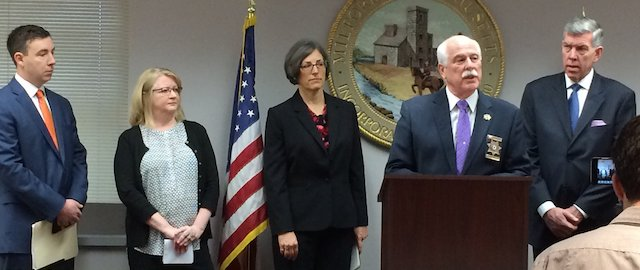
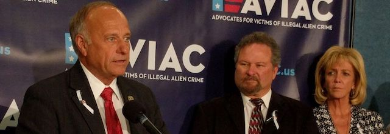
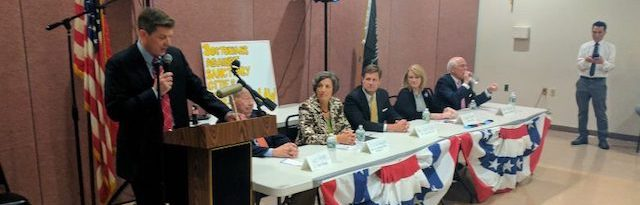
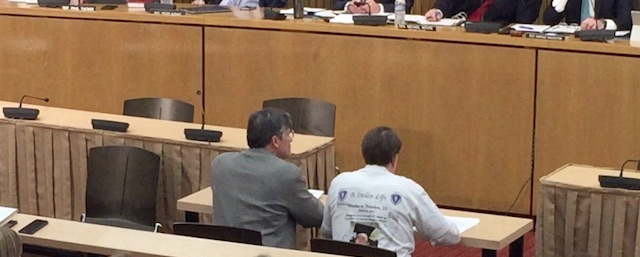

2020-01-26 08:00

On January 24th a handful of white extremists appeared before the Joint Committee on Public Safety and Homeland Security to lie about immigrants and about the provisions of the Safe Communities Act. This relatively small number of opponents is loud and extremely well-funded. Almost all are financed or fronted by two organizations identified as hate groups by the Southern Poverty Law Center — the Federation for American Immigration Reform (FAIR) and the Center for Immigration Studies (CIS). Both were founded by white supremacist and Michigan ophthalmologist John Tanton.
Indeed, it was Old Home Week at the State House for most of these people, who appear together repeatedly. And it’s time legislators knew precisely who they were listening to.
Tom Hodgson, who testified on January 24th in the Gardner auditorium, is not so much a county sheriff as he is a spokesman for FAIR. Hodgson serves on its National Advisory Board and sticks Massachusetts taxpayers with his travel expenses to FAIR events. Hodgson’s neglect of his day job in favor of his anti-immigrant crusade is costing incarcerated people their lives, health and rehabilitation.

Donald Rosenberg dropped in from Westlake Village, California to testify. Rosenberg is the president of AVIAC, Advocates For Illegal Alien Crime, a front group for FAIR whose events, such as the September 2019 “Angel Families” event in Washington DC, are organized by FAIR (whose legal arm, IRLI, the Immigration Reform Law Institute, provides legal services for AVIAC). Susan Tully, FAIR national field director and friend of Tom Hodgson, even admitted the connection to AVIAC in a Facebook post: “Working with our new group AVIAC.”
Maureen Maloney, AVIAC’s Vice President, also testified at the State House. Maloney told attendees at a 2017 event that the Catholic Church isn’t doing enough to turn its back on its own values: “The Catholic bishops make a fortune off of the refugees and the illegal aliens, and I’m a Catholic,” she claimed. When Maloney and Rosenberg (and FAIR) kicked off their organization at the National Press Club in Washington DC, their featured speaker was America’s white supremacist legislator Steve King, who was stripped of his committee assignments by Trump’s Tea Party GOP — no mean accomplishment in an age of concentration camps for Central American children and Stephen Miller’s brainstorm to ship DACA recipients out of the country in boxcars. Maloney herself is no slouch when it comes to unvarnished racism. Maloney was previously a member of The Remembrance Project, a group similar to AVIAC, also with substantial white supremacist connections.
Jessica Vaughan fled Massachusetts for South Carolina’s more agreeable (to her) racial climate and is now the “Director of Policy Studies” for the Center for Immigration Studies. Vaughan testified for five minutes and answered questions for fourteen more before the Joint Committee. Rather than focus on the SPLC’s designation of CIS as a hate group, just consider Vaughan’s own words and deeds: “Vaughan haspreviously discussed her work with The American Free Press, a virulently anti-Semitic newspaper founded by Willis Carto, a Holocaust denier who was active on the radical right for over five decades before his death in 2015. She has also been a featured speaker at multiple extremist events including white nationalist publisher The Social Contract Press’s annualWriter’s Workshop and the Federation for American Immigration Reform’sSheriff Border Summit. At the Writer’s Workshop, white nationalist Peter Brimelow of the racist website VDARE also spoke. In 1996, Vaughan appeared on an episode of ‘Borderline,’ a show produced by FAIR, alongside Chilton Williamson, a longtime editor of Chronicles magazine, a publication with strong neo-Confederate ties that caters to the more intellectual wing of the white nationalist movement.”

Lou Murray, whose group Bostonians Against Sanctuary Cities appears to be a front for CIS (with ties to FAIR), sat right next to Vaughan and yielded most of his time to her. Many of Murray’s public appearances feature Vaughan, Hodgson, and retired ICE agents. Murray’s group’s Facebook page is also littered with links to FAIR and CIS. When Michelle Malkin was disinvited from an appearance at Bentley College, Murray and Vaughan organized a private event for her. And as if to demonstrate how insular this little circle is, Murray and Vaughan hosted Maureen Maloney at one of their events in West Roxbury. Murray, who was a 2016 Republican National Convention delegate, hates Muslims just as much as he does Latinos. Murray serves on Trump’s Catholic Advisory Group and has “nothing but high praise” for Trump’s 2017 executive order to ban Muslims. Murray said the US government should help “those populations who are most vulnerable,” including “the Christian population who is most at risk from ISIS, Al Qaeda and other Islamic dangers.”

Steve Kropper of MCIR, the Massachusetts Coalition for Immigration Reform, also testified before the Joint Committee. Kropper, who in 2012 was arrested for violating a domestic violence restraining order, came to the microphone joking about his divorce. The rest of his testimony was equally unamusing. MCIR appears to be another CIS front group, but is also affiliated with another of white supremacist John Tanton’s groups, the Social Contract Press. MCIR’s president John Thompson wrote in 2016 in the Social Contract Press that immigrants “are natural constituents for politicians desirous of expanding the welfare state. They could potentially provide career opportunities for social workers, ethnic militants, immigration lawyers, and poverty activists for generations to come.” Thompson goes on to quote Jason Richwine, a white supremacist known for his paper, “IQ and Immigration Policy,” which says, among other things:
Thompson also quotes Robert Rector, of both the Heritage Foundation and CIS, whose 2007 study of the costs of undocumented refugees was rejected by even conservative Republicans (and eventually the Heritage Foundation itself) and Rector was blasted for his report’s sloppiness and dishonesty.
In March 2005 MCIR member Robert Casimiro, a Weymouth resident, flew to Arizona to join up with an armed militia called the Minuteman Project. According to a press release, “the project’s participants will also be conducting auxiliary border patrols, ‘spotting’ people crossing illegally and reporting them to the border patrol and the local authorities.” The Anti-Defamation League reported that Minuteman “members belonging to active vigilante groups, including their leadership, have been arrested on weapons charges and white supremacist and anti-governments groups continue to express interest and take part in organized ‘patrols’ of the border.”
These are just a few of the liars, racists, and extremists that routinely testify against Safe Communities.